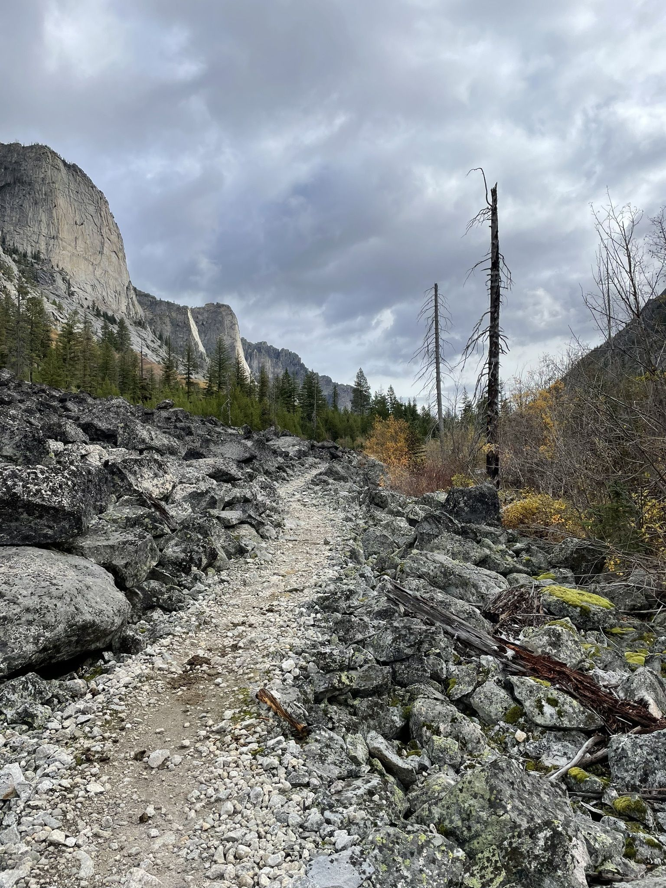
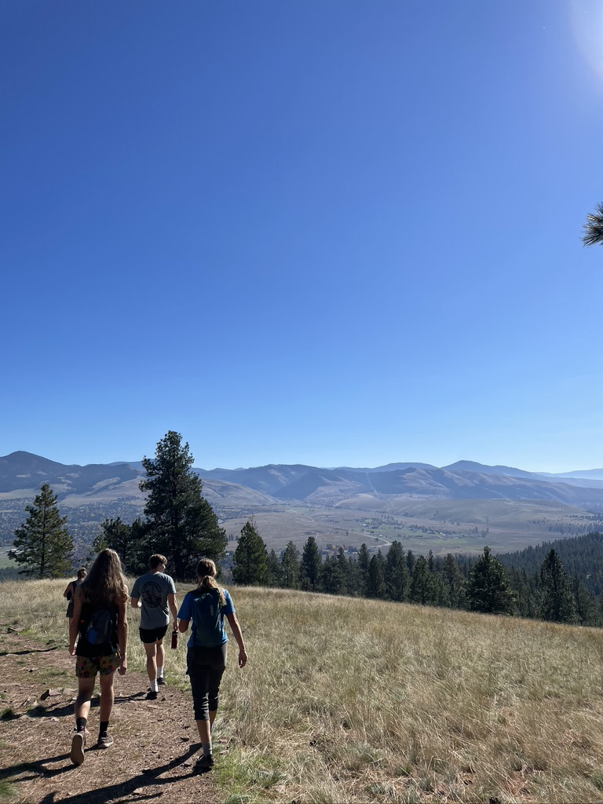
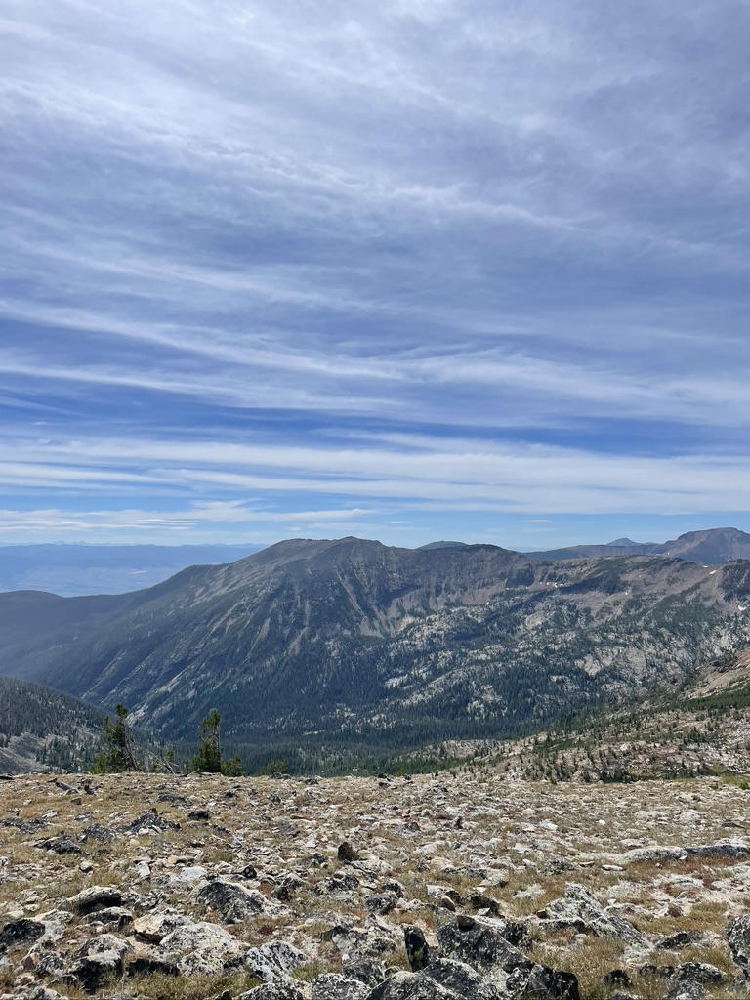

Top 3 Hikes of the SRA Club
In no particular order
Hike 1: Blodgett Canyon

- 9 miles total
- 980 ft Elevation Gain
- Takes average of 3.5 hours to complete
Hike 2: Blue Mountain

5.5 miles total
1,062 ft Elevation Gain
Takes on average 2 hours, 40 minutes to complete
Hike 3: Lolo Peak

11.4 miles total
4,163 ft Elevation Gain
Takes all-day, budget for at least 8 hours
Additional Hikes in Montana
Sign up for this weeks hike through the form below!
To Top!